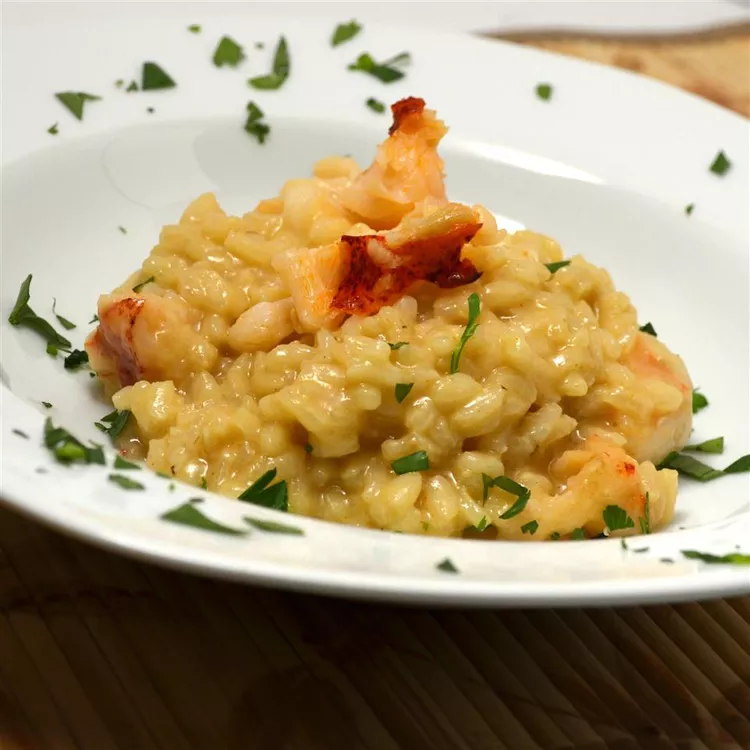

Lobster Risotto
This lobster risotto is deliciously rich and creamy. It's made with cooked lobster, Arborio rice, caramelized onions, white wine, and Parmesan cheese for a seafood dish that is sure to impress!

Ingredients
- ¼ cup olive oil, divided
- 2 onions, chopped
- 6 cups chicken broth
- 1 shallot, chopped
- 1 clove garlic, chopped
- 1 ½ cups Arborio rice
- ½ cup white wine
- 1 tablespoon honey
- 3 tablespoons butter
- 1 cup light cream
- 1 tablespoon paprika
- 1 teaspoon cayenne pepper
- ¼ cup sherry
- 2 cups cooked lobster meat
- ½ cup shredded Parmesan cheese
- 1 pinch salt and ground black pepper to taste
Directions
- Heat 2 tablespoons oil in a large skillet over medium heat. Add onions; cook and stir until caramelized and very tender, about 20 minutes.
- Bring chicken broth to a boil in a pot; reduce heat to low and keep at a simmer.
- Heat remaining 2 tablespoons oil in a large, flat-bottom pan over medium-high heat. Cook and stir shallot and garlic in the hot oil until fragrant, about 2 minutes. Add Arborio rice to shallot mixture; cook and stir until rice begins to brown, about 3 minutes. Add wine and cook for 1 minute.
- Stir 1 cup chicken broth into rice mixture; cook, stirring constantly, until broth is absorbed. Repeat adding broth, 1 cup at a time, until all the broth is used, stirring constantly until broth is absorbed each time, about 30 minutes.
- Stir honey into onions; cook and stir, 5 minutes more.
- Stir butter into rice mixture until melted. Add cream and stir until rice mixture thickens, about 3 minutes. Add paprika and cayenne pepper; stir well. Add sherry and mix well. Stir lobster meat into rice mixture and cook until heated through, about 3 minutes. Mix Parmesan cheese into rice mixture until melted. Add onion mixture and mix well; season with salt and pepper.
Tips
- Stir the risotto often, but not constantly. If you stir the rice too much, it will become gluey. If you don't stir it enough, though, it won't be creamy and it will stick to the bottom and burn.
- Make sure the chicken broth is warm or at least room temperature before you add it to the rice. Cold liquid won't cook through as well.
- Use a pot that fits just over the burner. If the pot is too wide, the rice will cook in a thin layer. This isn't ideal for creamy, rich risotto.
Back to home